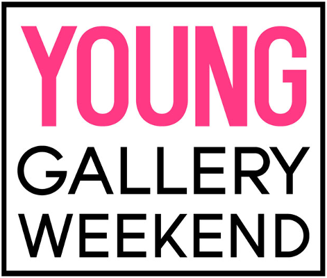

La Grey, Tarragona. 11/2015. Espronceda, center for art & culture. Barcelona, 9/2016
Amb la col·laboració de Maria Cosmes
Existeixen cossos normatius? Existeixen cossos abjectes? Quina és la norma? Qui la marca? Perquè? Perquè s'accepta o s'interioritza fins al punt de crear patiments indicibles?
Els models que ens intenten imposar, no seran precisament aquells que se surten de la normalitat? No en seran l'excepció? No serem la resta els que tenim cossos normals -en les seves infinites variacions- els què constituïm la normalitat, els què som la norma? Ens calen altres models extrems per lluitar contra un model inabastable? Perquè llavors, on quedarien tots els nostres cossos? On quedarien tots els cossos que importen? On quedarien tots els cossos?...
Parteixo de dues premisses bàsiques. La primera, que el cos, per se, és normal, que tots els cossos, per definició, són normals. I la segona, que som, i que som per nosaltres mateixos. No ens calen models extrems -ni d'un extrem ni de l'altre- amb els quals no ens podem identificar. De fet, no ens calen models per reivindicar el nostre ésser. L'únic què és abjecte és menjar mocadors de paper per no engreixar i així crear uns models irreals, amb els quals es crearan més tard unes imatges de cossos inexistents.
No hi ha normes, només discursos que volen normativitzar. discursos opressius per esclafar els nostres cossos. Discursos només, però el patiment és real.
I la única cosa que tenim per oposar-nos-hi és el cos que tenim. Allò que importa.
Ens volen imposar uns objectius impossibles. Les obligacions, explícites o implícites, ens ofeguen i angoixen. La racionalització no serveix, seguim patint. Prenem-nos-ho a broma.
En el passat, estàvem pràcticament obligats a viure amb les característiques físiques amb les quals arribàvem al món. Per a molts, això significava viure amb trets físics que els tornaven bojos. En aquells temps, aquests problemes eren categoritzats de forma errònia com una qüestió de vanitat. La veritat és que molts d'aquests defectes percebuts generaven grans problemes d'autoestima. (...)
Una raó addicional per la qual la gent es fa cirurgia plàstica inclou la inevitable lluita contra el pas del temps. Envellim cada dia i el nostre cos ho demostra. A mesura que la gent envelleix, molts senten la necessitat de lluitar contra els seus efectes, un impuls que ha existit al llarg de la història. (...)
En una societat moderna com la nostra, s'espera que un visqui i treballi més temps. La cirurgia plàstica ofereix en certa manera una opció per “mantenir-se competitiu” des del punt de vista de la imatge personal. Això és particularment cert al món empresarial i sembla demostrar-se en el fet que molts homes estan recorrent a la cirurgia plàstica més que abans. (...)
Quins són els motius per fer-se cirurgia plàstica? Vegin alguns dels reality shows en els quals la cirurgia plàstica juga un paper important. Vostès veuran la resposta al final de cada episodi.
Extret d'articles "divulgatius" sobre la cirurgia estètica a internet
Agraïments a: Antonio, Juan Carlos, Sara, Víctor, Mar, Ana, Anna i María d'Escalera de Incendios, Héctor i a l'equip d'Espronceda.
